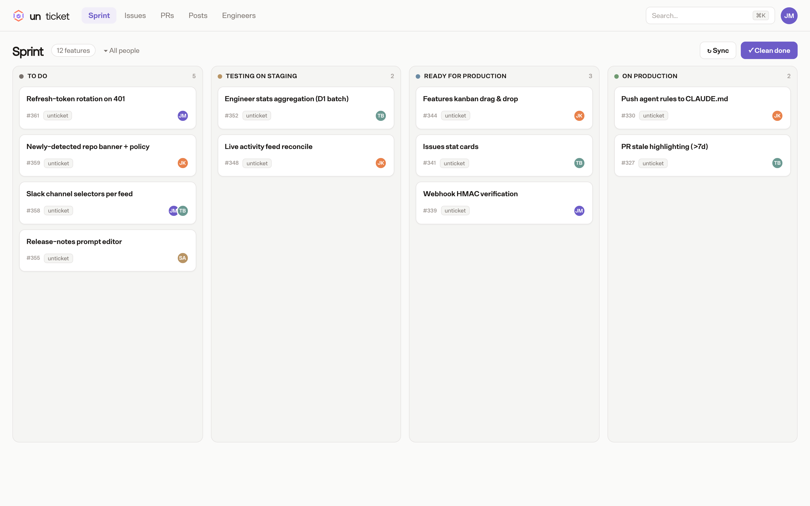
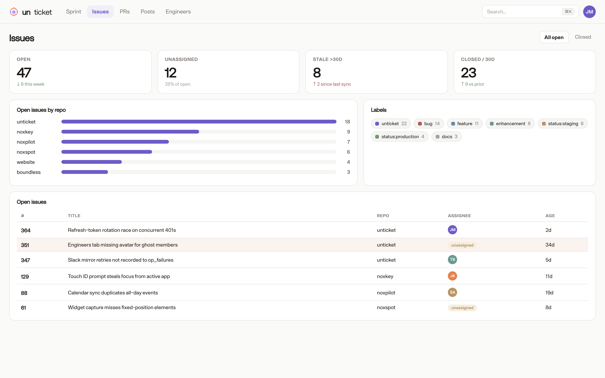
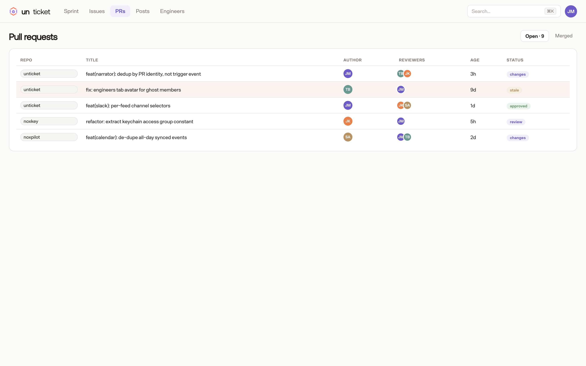
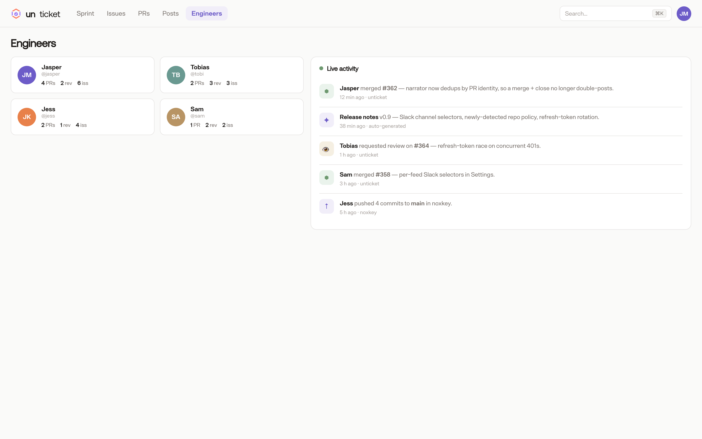

unticket turns your GitHub org into a live dashboard — a features kanban, issue & PR triage, engineer stats, and AI-written release notes. Everything derived from GitHub. No manual ticket-keeping.
Self-host on Cloudflare in minutes, or use app.unticket.ai.

Stop juggling Jira, spreadsheets, and a dozen GitHub tabs. unticket pulls it all together and keeps it live.
A drag-and-drop board backed by GitHub Issues. Owners, plans, and status columns stay in sync — no double-entry.
Open and merged PRs plus issues across every repo, with stale detection, assignees, and one-click assignment.
Per-engineer open PRs, reviews, and assignments, plus a live activity feed. Spot blockers at a glance.
An auto-narrated timeline of merges, releases, and pushes — first-person posts in your team's own voice.
Every merged PR becomes a structured release note and a chat-style post, generated automatically.
Webhooks keep everything live; a 30-minute cron reconciles anything missed. Refresh tokens keep you signed in.
From triage to release, one window into your org. Mirrors live GitHub data.



Pages + D1 + a cron Worker — free-tier friendly. Full source under AGPL-3.0: yours to read, modify, and self-host.
Clone No-Box-Dev/unticket and add your Cloudflare + GitHub App secrets.
Run the migrations, bind the database, and point the deploy at your org.
# Fork github.com/No-Box-Dev/unticket, then:
git clone https://github.com/you/unticket && cd unticket
npx wrangler d1 create unticket
npx wrangler d1 migrations apply unticket --remote
# add GITHUB_APP_* + ENCRYPTION_KEY secrets, then:
npx wrangler pages deploy . # → liveGitHub Projects is a blank canvas; Jira is a separate system you have to keep in sync. unticket derives everything — the kanban, triage, engineer stats, and release notes — from your existing GitHub data. No duplicate tickets, no manual status updates, no second source of truth.
Yes. It runs on Cloudflare Pages + D1 + a cron Worker, comfortably within the free tier for small teams. The code is AGPL-3.0 — free forever, including commercial use, as long as you share any modifications you distribute or serve over a network.
In your own Cloudflare account. The hosted app at app.unticket.ai keeps sync data in our D1; a self-hosted instance keeps everything in yours. Either way, GitHub remains the source of truth — unticket is a read of it, plus a thin layer of project-management metadata.
Absolutely. Sign in at app.unticket.ai with GitHub, install the app on the orgs you choose, and you're in. Self-hosting is there when you want full control — same product, your infrastructure.
Open-source today. Self-host or hosted — your call.